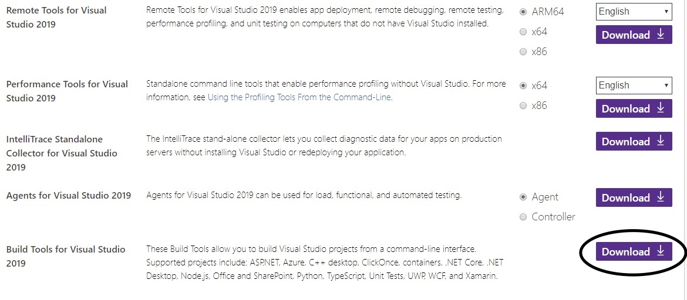
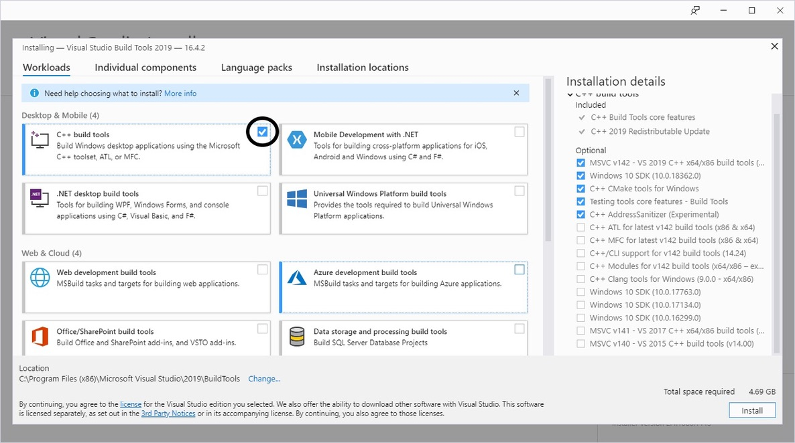
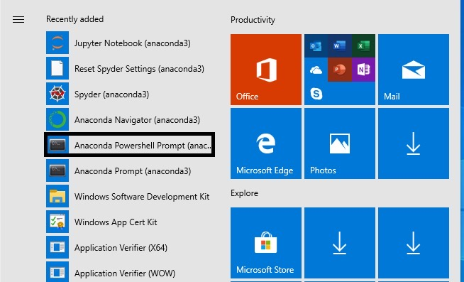

Windows Installation¶
Windows installation is broken up into two categories. The first is for end user installation and the second is for development. The installation guide is based on Windows 10.
End User Installation¶
The majority of users will want to simply install the binary distribution of the library. This can be accomplished using pip. If we do not have a binary wheel for your operating system, you must follow the development installation guide.
pip install matrixprofile
Development Installation¶
Due to our usage of Cython and OpenMP for some modules, you are required to install Microsoft Visual C++ Build Tools. This portion of the installation guide will walk you through that.
Install Anaconda¶
Anaconda has become the defacto Python distribution for scientific computing and is highly recommended. You may use a base installation of Python without it, but this document does not cover that use case.
Download the Anaconda installer for Windows from the Anaconda website.
Be sure to make this the default Python during the installation.
Install Visual C++ Build Tools¶
Go to https://visualstudio.microsoft.com/downloads/ and download the “Build Tools for Visual Studio”. Scroll down and find it in the section labeled “Tools for Visual Studio”.

During the installation, be sure to check the box next to “C++ Build Tools”.

Install matrixprofile for Development¶
Finally, we can clone the matrixprofile source code and install it in development mode. If you wish, you may create a new Anaconda environment for this. Please refer to the Anaconda documentation to create a conda environment.
Clone the repository using git.
Next, launch an Anaconda Powershell.

cd matrixprofile
pip install -e .
pip install -r requirements.txt
Once the installation completes, you can try running the tests to verify everything is OK.
pytest tests/
Please refer to our contribution guidelines for details on what we expect. Happy coding!